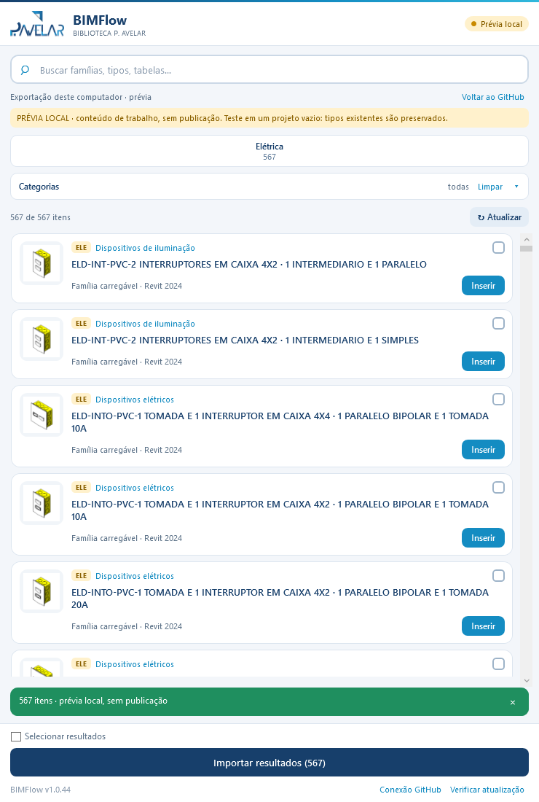
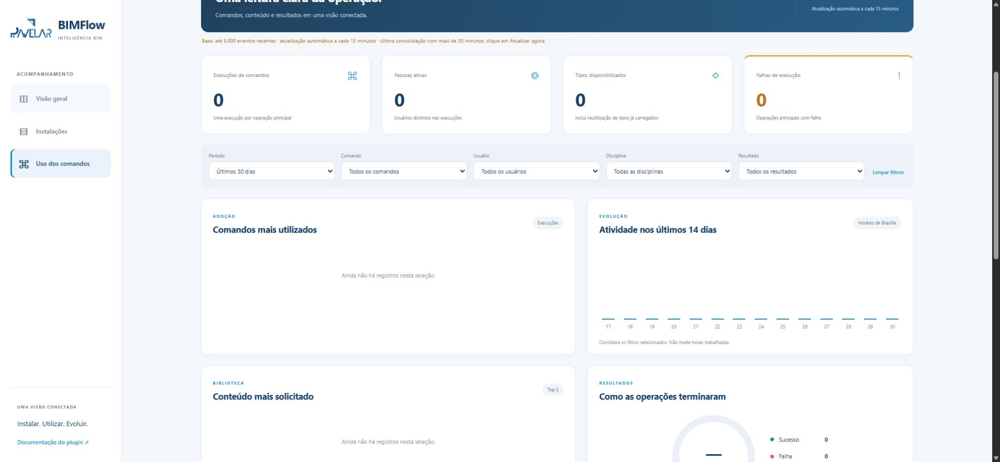

RVT aprovado
Qualquer nome e pasta, com as alterações salvas.
O BIMFlow reúne busca, importação e publicação de conteúdo Revit. Elétrica e arquitetura iniciam uma estrutura que pode ser mantida e ampliada pela equipe BIM.
O acompanhamento corporativo está em Pavelar-BIM · Guia e dashboard. Esta cópia foi preservada para continuidade.
A v1.0.47 usa os repositórios da Pavelar-BIM para biblioteca e atualizações. O histórico de uso está na conta Google corporativa, com consolidação a cada 15 minutos. Versão preparada: v1.0.47. A origem pessoal foi preservada. Luva dos Conduletes e os três Desvios de Prumadas foram validados no Revit pelo responsável.
Referência dos catálogos conferidos em 27/10/2026; as novas ferramentas não alteram essas contagens. Cada tipo é uma opção Revit; tabelas, legendas e modelos são reunidos em pacotes.
| Conteúdo | Elétrica | Arquitetura | Como aparece no painel |
|---|
Elétrica tem 7 tipos de eletrodutos e 4 de eletrocalhas. Os pacotes incluem 12 modelos de vista de elétrica e 48 de arquitetura.
Evoluções previstas para continuidade pela equipe, com planejamento e responsáveis a definir.
Leia da esquerda para a direita, linha por linha. Os filtros destacam as etapas sem apagar o caminho.
O setor BIM prepara o conteúdo. Os projetistas consultam o catálogo online e baixam apenas os modelos necessários para o computador.
Qualquer nome e pasta, com as alterações salvas.
RFAs, RVT, JSONs, imagens e relatório são gerados e validados.
Catálogos no repositório; arquivos pesados nas Releases.
Lista e miniaturas primeiro. RFA ou RVT baixado sob demanda.
Importação e solicitação da ferramenta de inserção.
A publicação é montada em rascunho. Depois do envio e das conferências, um único commit atualiza o índice e os catálogos. Falhas não devem substituir a revisão ativa.
Arquivos baixados são conferidos por SHA-256. O cache permite reutilizar conteúdo já recebido; sem uma primeira sincronização, não há biblioteca offline.
O instalador preparado inclui uma configuração de somente leitura ao lado da DLL. O projetista abre o painel sem cadastrar uma conta GitHub.
Publicar exige perfil Equipe BIM e uma credencial própria com escrita, protegida pelo Windows. O acesso de leitura pode ser extraído do instalador: esse risco foi aceito. Tokens e chaves nunca entram no código, no catálogo nem neste site. Se expirarem, distribuir o instalador atualizado.
O painel concentra busca e importação. Os comandos de gestão ficam separados das ferramentas de padronização.

| Painel | Comando | Finalidade |
|---|---|---|
| Biblioteca | Biblioteca BIMFlow | Buscar, filtrar, selecionar, importar e iniciar a inserção do conteúdo. |
| Gestão da biblioteca | Exportar Catálogo | Preparar a disciplina e, opcionalmente, publicar a revisão no GitHub. |
| Gestão da biblioteca | Publicar Biblioteca | Enviar um pacote local já exportado, sem processar o RVT novamente. |
| Padronização | Parâmetros de Folhas | Carregar ou verificar os parâmetros compartilhados corporativos de folhas. |
| Elétrica | Luva dos Conduletes | Ajustar a visibilidade das luvas conforme as conexões dos conduletes selecionados. |
| Hidrossanitário | Desvios de Prumadas ▾ | Escolher desvio direto, com um joelho ou com dois joelhos; selecionar as tubulações no projeto. |
| Acesso | Acesso BIM / Encerrar BIM | Iniciar como Projetista e liberar ferramentas de gestão para a Equipe BIM. A senha é uma barreira operacional; a credencial de escrita continua obrigatória. |

Exportar Catálogo com a publicação desmarcada → Prévia local → conferir e testar → Publicar Biblioteca → Voltar ao GitHub → Atualizar.
A prévia lê %LOCALAPPDATA%\BIMFlow\Exportacoes\DISCIPLINA\VERSAO deste computador. Não faz upload, não exige credencial e não altera a biblioteca publicada. O painel volta a iniciar no GitHub ao reabrir o Revit.

Gravação do piloto anterior à integração GitHub. Serve como referência do fluxo de busca e inserção; os rótulos e comandos atuais estão descritos acima.
Use os procedimentos abaixo para trabalhar no projeto, atualizar o acervo e manter a solução.
Se o tipo exigir hospedeiro, vista compatível ou desenho de contorno, o Revit solicitará essa interação. O painel não elimina essas condições de criação.
A publicação exige credencial com permissão de escrita. Se o envio falhar, o pacote local pode ser reenviado; não é necessário repetir toda a exportação.
A release do plugin e as revisões da biblioteca são independentes. Publicar uma DLL não atualiza os catálogos e publicar famílias não troca a DLL dos usuários.
O instalador fica no Drive compartilhado. O dashboard mostra a versão do plugin em cada computador que abriu o Revit.
G:\Drives compartilhados\BIM\PLUG INS\BIMFlow\Instalador_BIMFlow.exeInstalar de novo sobre uma versão anterior substitui os arquivos. Não é preciso desinstalar antes.
Cada instalação é um computador + versão do Revit, registrada quando o plugin abre. Sem contato recente não significa que a máquina esteja desligada.
Scripts e pacotes ficam no Drive. O código é mantido no repositório corporativo Pavelar-BIM/BIMFlow. Use Windows PowerShell 5.1 e Inno Setup 6. A geração injeta as configurações privadas; o ZIP publicado no GitHub permanece limpo.
G:\Drives compartilhados\BIM\PLUG INS\BIMFlow\MANUTENÇÃO INSTALADOR.\Gerar-Corporativo.ps1 `
-Pacote '.\PACOTES\BIMFlow-v1.0.47.zip' `
-CodigoFonte 'C:\BIM\BIMFlow' -PublicarSubstitua o caminho do clone pelo seu diretório de código. O script usa o receptor corporativo configurado e prepara a BASE somente na pasta local do Windows; compartilha apenas o EXE, com backup. A chave de ingestão fica protegida no Windows, sem arquivo de texto claro na pasta compartilhada. Outro mantenedor configura as próprias credenciais. Tokens iniciais de 30 dias: renovar antes de 29/11/2026 e gerar novo instalador.
O instalador compartilhado permanece em G:\Drives compartilhados\BIM\PLUG INS\BIMFlow\Instalador_BIMFlow.exe. Feche o Revit antes de instalar. O acesso de publicação é separado e configurado pelo setor BIM na própria máquina.
Visão geral, instalações e uso dos comandos mudam dentro da mesma aba e preservam os filtros.

Usuário, máquina, IP local, arquivo Revit, data e hora, versão, comando, família/tipo e resultado, além dos demais campos do evento. Biblioteca, parâmetros, gestão e os novos comandos enviam registros.
Fila local → receptor com chave de ingestão → planilha privada → snapshot público → dashboard. Falhas de conexão geram reenvio sem repetir o mesmo identificador.
Consultar uso dos comandos →Os campos de uso, incluindo nomes, máquinas, arquivos e IP local, estão disponíveis sem login para quem receber o link. O endereço não é uma restrição de acesso. Credenciais e chaves não são publicadas.
Os testes técnicos são identificados e excluídos dos indicadores de utilização real. Uma instalação sem contato recente não significa que o computador esteja desligado.
As responsabilidades são separadas para manter código, acervo e documentação sem misturar os arquivos pesados.
Acesso restrito · Solução C#, interface, testes e publicação da DLL.
02 · ACERVO PRIVADOAcesso restrito · Índice, catálogos e revisões com RFAs, RVTs e metadados.
03 · DOCUMENTAÇÃOEste guia e os dashboards de instalações e uso dos comandos, publicados no GitHub Pages.

%LOCALAPPDATA%\BIMFlow\Exportacoes\ ├── ELÉTRICA\2024\ │ ├── FAMÍLIAS CARREGÁVEIS\CATEGORIA\ │ ├── FAMÍLIAS SISTEMA\ │ ├── IMAGENS\ │ ├── RELATÓRIOS\ │ ├── BACKUPS\ │ ├── catalogo-carregaveis.json │ ├── catalogo-sistemas.json │ └── catalogo-vistas.json └── ARQUITETURA\2024\ (mesma estrutura) Cache do projetista: %LOCALAPPDATA%\BIMFlow\BibliotecaOnline\
O Drive foi usado como origem da migração. No fluxo online preparado, ele não é necessário no computador do projetista.
BIMFlow.Extension/
├── Commands/
│ ├── Biblioteca/
│ ├── Catalogo/
│ ├── Eletrica/
│ ├── Hidrossanitario/
│ └── Padronizacao/
├── Models/
│ ├── Biblioteca/
│ └── Catalogo/
├── Services/Biblioteca/
│ └── Online/
└── UI/
└── Biblioteca/
BIMFlow.Library.Tests/
└── testes do fluxo onlineA organização acompanha a responsabilidade do recurso. Novos comandos do plugin legado devem seguir essa divisão.
| Informação | Exemplo | Uso |
|---|---|---|
| Disciplina e versão | arquitetura · 2024 | Separar conteúdo e compatibilidade. |
| Identidade do item | id · tipoOrigemUniqueId | Distinguir tipos, inclusive quando têm o mesmo nome. |
| Nome, família e categoria | Parede básica · paredes | Exibir cartões, filtros e busca. |
| Tipo de conteúdo | carregavel · sistema · pacote | Escolher o fluxo de importação. |
| Arquivo e miniatura | Caminhos relativos de RFA/RVT e imagem | Encontrar o conteúdo sem depender da pasta original. |
| Palavras-chave e membros | Termos de busca · nomes de vistas | Pesquisar e importar os pacotes. |
| Configurações suportadas | Padrão e diâmetros de eletrodutos | Validar os dados específicos da categoria. |
{
"versaoCatalogo": 1,
"disciplina": "arquitetura",
"revitVersaoArquivo": "2024",
"arquivo": "FAMÍLIAS SISTEMA/Biblioteca aprovada.rvt",
"itens": [{
"id": "paredes_identificador-unico",
"nome": "Parede de alvenaria 19 cm",
"nomeTipoRevit": "Parede de alvenaria 19 cm",
"familia": "Parede básica",
"tipoConteudo": "sistema",
"categoria": "paredes",
"imagem": "IMAGENS/parede.png",
"palavrasChave": ["alvenaria", "parede"]
}]
}Exemplo explicativo. Os IDs e os caminhos válidos são gerados pelo exportador; não usar este trecho como catálogo de produção.
As próximas atividades organizam a operação corporativa e a evolução do plugin.
A cópia completa dos fontes e recursos está separada do plugin atual. O original foi preservado; arquivos temporários e credencial operacional antiga foram retirados da cópia de entrega.
G:\Drives compartilhados\BIM\PLUG INS\BIMFlow\LEGADO\BIMFLOW-LEGADO-20261030\BIMFlow.slnNa pasta LEGADO há também o ZIP, instruções e um manifesto de hashes. Copiar para o computador antes de abrir no Visual Studio; restaurar o NuGet e revisar referências do Revit, Dynamo e Navisworks. O legado é para Revit 2024 e não foi recompilado nesta entrega.
README de operação e manutenção ↗ · Instruções de entrega ↗ · acesso restrito ao repositório.
Uma compilação bem-sucedida não substitui a validação no Revit.
Paredes básicas de camadas uniformes são elegíveis. Paredes cortina/empilhadas, composições não homogêneas ao longo da altura e decks estruturais permanecem fora desta fase. As comparações de materiais não certificam todos os assets de aparência ou propriedades físicas.
Os tipos existentes são preservados. Divergências detectadas nas configurações ou composições dos sistemas interrompem e revertem o lote. Revisar o tipo ou material no destino antes de repetir.
Legendas precisam de uma legenda base compatível no projeto de destino. Modelos de vista não exigem essa base. Os modelos são disponibilizados, mas sua aplicação às vistas é uma escolha do usuário.
Conferir a versão do instalador e a revisão publicada. Se aparecer acesso expirado, atualizar o BIMFlow. A publicação usa uma credencial própria de escrita. O catálogo antigo fixo no D: foi removido: a falta da biblioteca deve ser informada, sem mostrar itens do piloto como se fossem dados atualizados.
O código compila para Revit 2024 e 2025. A exportação de arquitetura e seus 24 tipos de parede foram conferidos no catálogo real. O fluxo foi homologado pela equipe no Revit. As regras dos novos comandos possuem testes automatizados; a validação de Luva dos Conduletes e Desvios de Prumadas foi confirmada pelo responsável. Novos conteúdos e projetos continuam sujeitos à validação.